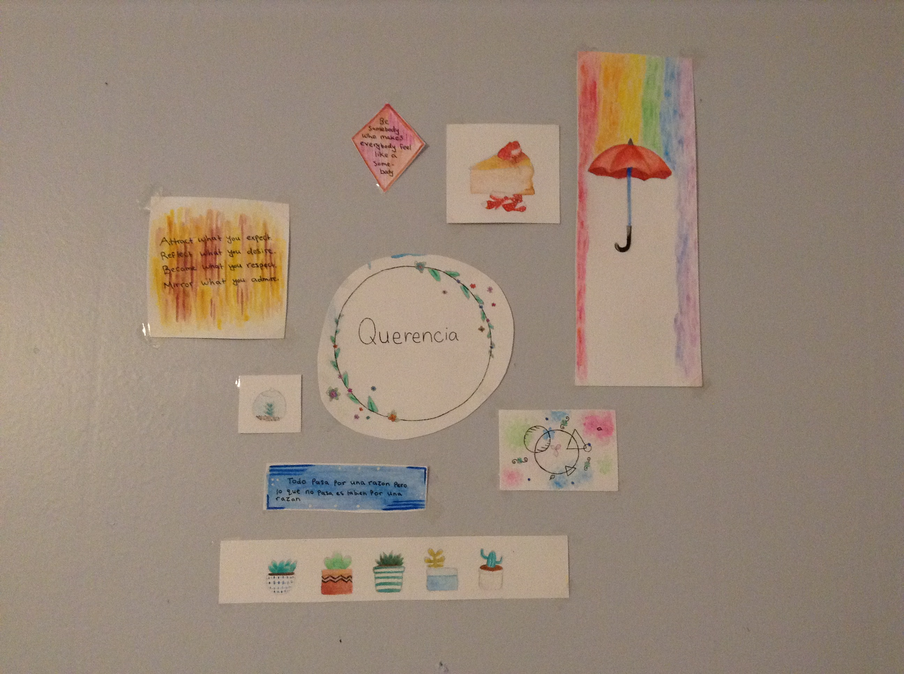
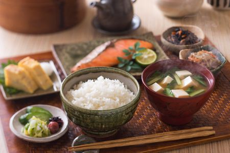

My Hobbies
Books

I'm a huge fan of books and I absolutely adore them. You'll probably find
me reading one during lunch time or on the bus. But what I love nearly as much
as reading them is buying them. The biggest reason why I'm constantly running
out of shelf space. There's just something so satisfying to me about
purchasing a portable, brand new world wrapped up in a beautiful cover. My
favorite genres are horror, action/ adventure, fantasy, and mystery. Every
summer I go on a mystery/ psychological thriller marathon except this year,
the marathon has run into the year with me. I also like making puns. :)
Painting

(This is a watercolor collage I did for my room this summer.)
Painting is a way for me to relax while expressing myself in different ways. It
also allows me to create pieces that I can share with those I care about. I really
only paint with acrylic and watercolor but am always open to try different medias.
Cooking

Lately, I've been interested in cooking, baking, and experimenting with different
food combinations. The science and chemistry behind them is pretty cool and so
is the way different flavors can compliment each other or totally ruin both of
their flavors. I'm still new to the whole thing though so I don't feel too
confident in my abilities but I hope to improve with more practice. Cooking
is also a way to connect with others so that makes it enjoyable as well. I've
also been interested in different countries and was curious to see how similar
or different their culture and food is to mine. One such country is Japan. I use
this cooking blog when I want to make a Japanese dish or just
learn about the culture.